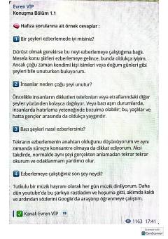

ITIngliz tilida og'zaki nutqni rivojlantirish uchun namunaviy savol-javoblar to'plami.
Ushbu kitob ingliz tilida og'zaki nutq ko'nikmalarini rivojlantirish uchun mo'ljallangan savol-javoblar to'plamidir. Unda kundalik mavzular, texnologiyalar, qishloq xo'jaligi va ijtimoiy masalalar bo'yicha namunaviy javoblar keltirilgan.